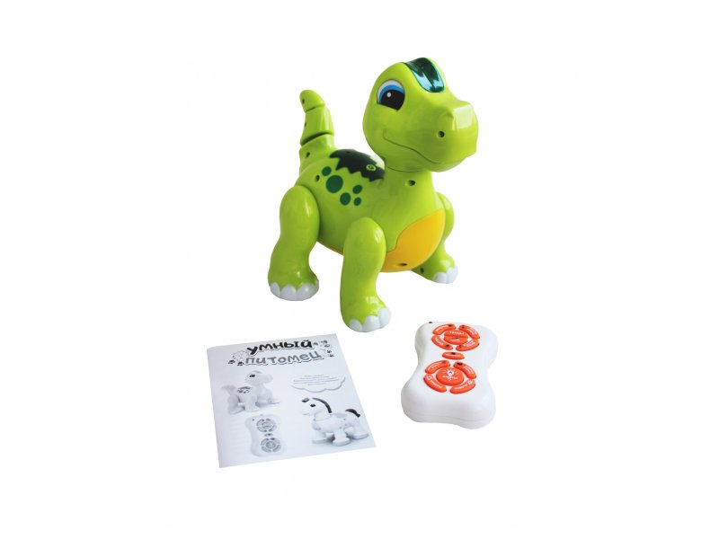
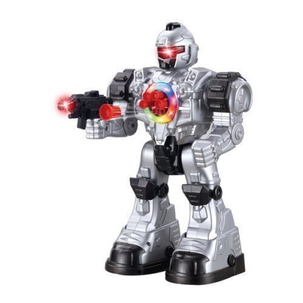
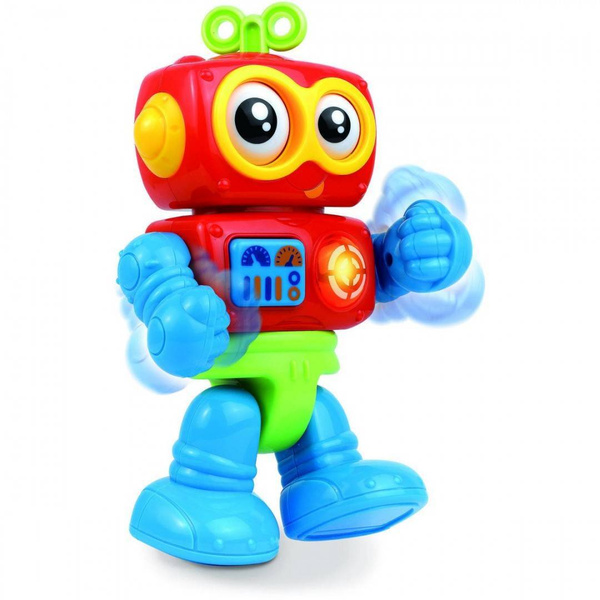
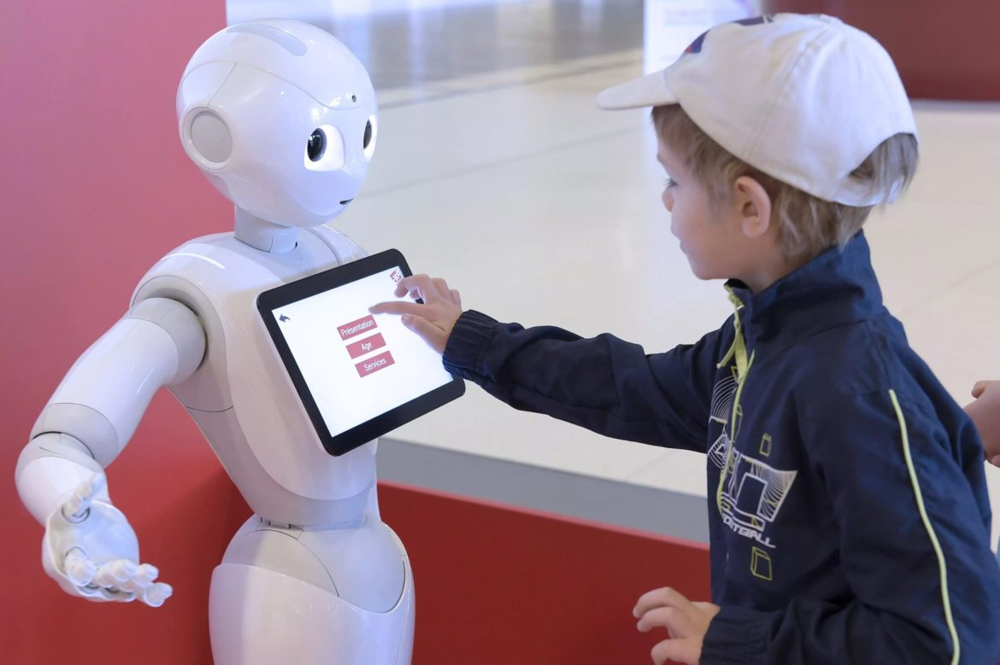
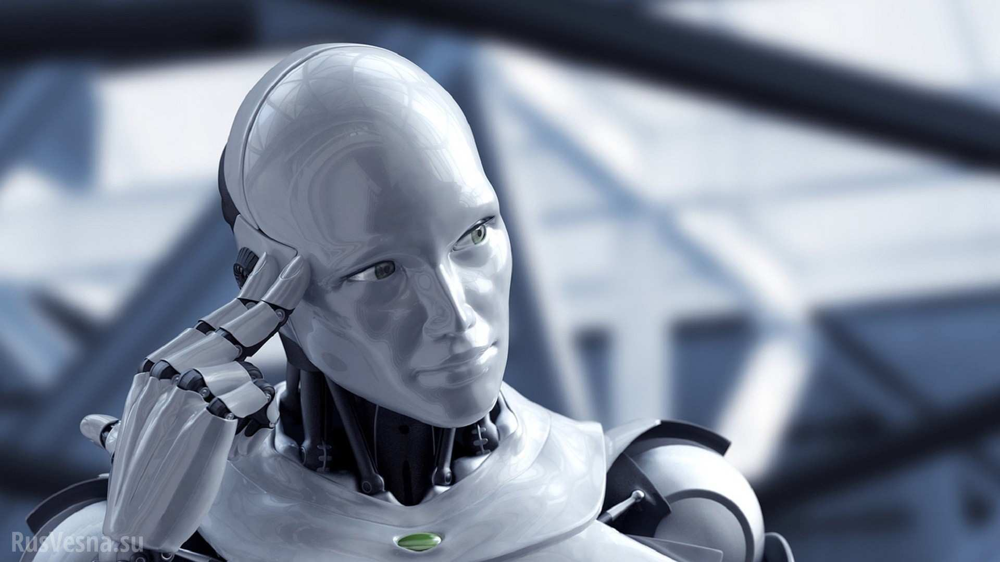
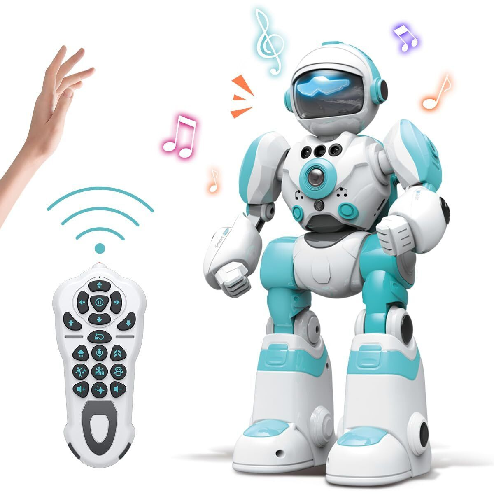

| Категория | Описание | Изображение |
|---|---|---|
| Роботы для детей | Роботы-звери: это роботы, напоминающие различных животных, от кошек до динозавров. Они могут издавать звуки, выполнять движения и взаимодействовать с детьми, что помогает развивать эмоции и воображение. Такие игрушки могут не только развлекать, но и формировать у детей любовь к природе и животным. |  |
| Роботы-солдаты: роботы, выполненные в виде военных машин или солдат, часто с элементами для ведения боевых игр или выполнения миссий. Эти роботы помогают детям развивать стратегическое мышление и воображение. Они часто используются для обучения тактическим действиям, но важно, чтобы дети понимали, что это только игра. |  |

Роботы для детей
Роботы для обучения
Современные тренды

Роботы-игрушки начали своё развитие в середине 20 века, когда появились первые механические игрушки, которые могли двигаться или издавать звуки. В те времена большинство таких игрушек не имели сложных функций и использовались исключительно для развлечения детей. В 90-х годах, с ростом интереса к технологиям, начали появляться первые роботы с элементами искусственного интеллекта и сенсорных систем.
С развитием компьютерных технологий в 2000-х годах роботы стали умнее. Они начали оснащаться датчиками для распознавания голоса и движения, что позволяло им взаимодействовать с детьми в более сложных формах. Эти роботы начали играть не только развлекательную, но и образовательную роль, обучая детей программированию, математике и другим предметам в доступной и интересной форме. С каждым годом они становились всё более универсальными и интересными, привлекая внимание как детей, так и родителей.
С каждым десятилетием роботы-игрушки становятся всё более функциональными и интегрированными с новыми технологиями. Сегодня мы можем наблюдать, как современные роботы могут учить детей новым вещам, включая робототехнику и основы компьютерных наук. Программируемые роботы, такие как Lego Mindstorms и другие подобные комплекты, позволяют детям не только собирать роботов, но и программировать их поведение, что открывает новые горизонты для обучения и развития. В будущем можно ожидать ещё больше интеграции искусственного интеллекта в эти устройства.
Современные роботы-игрушки способны адаптироваться к окружающей среде, они могут взаимодействовать с другими устройствами через интернет, обеспечивая многофункциональность и гибкость. В будущем можно ожидать, что такие роботы будут становиться всё более интерактивными, интегрированными в образовательные программы и ежедневную жизнь, помогая детям не только развлекаться, но и учиться эффективно и увлекательно. Они смогут адаптироваться к индивидуальным потребностям каждого ребёнка, обучая его в режиме реального времени.
© 2025 Использованные источники